Introduzione, finalità del progetto e strumenti utilizzati
Chiacchiere sulla pandemia covid 19 e sull’utilità della raccolta e dell’analisi dei dati (è un’idea)
Fin dall’inizio della pandemia da Covid-19 in Italia, nel gennaio del 2020, è stata creata una repository su GitHub contenente
open data riguardo l’andamento delle infezioni e della pandemia in generale (ospedalizzazioni, guarigioni, terapie intensive etc.).
Con l’avvio della campagna vaccinale a questi dati si sono aggiunti quelli riguardanti le consegne e le somministrazioni dei vaccini
a tutte le regioni e le province italiane.
Lo scopo del seguente assignment è quello di utilizzare questi dati per svolgere alcune semplici analisi descrittive tramite
l’uso della piattaforma Databricks e lo sviluppo di un programma basato su Apache Spark.
In aggiunta, si è scelto di analizzare alcuni dati aggiuntivi relativi all’indice Rt e alle condizioni metereologiche,
questi ultimi allo scopo di provare ad individuare un possibile legame tra lo sviluppo della pandemia e le condizioni
meteo delle principali città italiane (da sistemare).
Fonti
Come accennato in precedenza i dati utilizzati sono dati pubblici, presenti in delle repository di GitHub:
- https://github.com/pcm-dpc/COVID-19
- https://github.com/italia/covid19-opendata-vaccini
Tali dati sono stati messi a disposizione dal dipartimento della Protezione Civile Italiana[1].
Queste due repository contengono dati raccolti dal dipartimento della Protezione Civile, dalle diverse regioni italiane e dal Ministero della salute. Tali dati sono in formato aperto relativi all’andamento della pandemia COVID-19 e alla consegna e somministrazione nelle varie regioni Italiane dei vaccini anti COVID-19.
In particolare, per quanto riguarda l’andamento dalle infezioni da Coronavirus le informazioni messe a disposizione sono le seguenti:
- Attualmente positivi: totale persone attualmente positive sia ospedalizzate che in isolamento domiciliare.
- Guariti: totale persone clinicamente guarite.
- Deceduti: persone decedute (in attesa di verifica ISS).
- Totale positivi: totale persone risultate positive.
- Totale positivi e attuali per Regione:totale persone risultate positive e attuali positive per Regione.
- Totale positivi per Provincia: totale persone risultate positive per Provincia.
- Mappe situazione per Regione: riporta il totale persone risultate positive e in cui è possibile visualizzare,
attraverso l'icona "livelli" all'interno della mappa, altri dati e informazioni. Il centroide è fissato sul capoluogo di Regione.
- Mappe situazione per Provincia: riporta il totale persone risultate positive. Il centroide è fissato sul capoluogo di Provincia.
- Andamento nazionale: grafico che riporta l'andamento nazionale degli attuali positivi, dei guariti e dei deceduti.
- Incremento giornaliero degli attualmente positivi: grafico che riporta l'andamento nazionale dei nuovi risultati positivi.
La seconda repository contiene invece i dati relativi alla consegna e somministrazione nelle varie regioni Italiane dei vaccini anti COVID-19. Il dataset è suddiviso in 10 tabelle che riguardano principalmente i dati sui vaccini rispetto a:
- consegne suddivise per data di consegna e regione;
- somministrazioni suddivise per data, regione, fascia d'età, genere e categoria di appartenenza del soggetto vaccinato;
- platee di somministrazione;
- punti di somministrazione.
Fonti esterne
- Dati indice RT
- Dati meteo
Analisi
Librerie usate
1 from functools import reduce
2 from pyspark.sql import DataFrame
3 from pyspark.sql.functions import *
4 from pyspark.sql.types import StringType
La funzione reduce è utilizzata per applicare varie funzioni in modo efficinete ai datasets sfruttando il paradigme MapReduce. Si importano tutte le funzioni dal
pacchetto sql come la funzione union, usata successivamente per unire diversi dataframe o le funzioni aggregate di somma, media, ... Infine, dal pacchetto
types si import anche la classe che definisce il tipo string utilizzato per inpostare il tipo ad alcune colonne dei datasets.
Caricamento datasets
1 # Caricamento dei vari dataset
2 covid_path_root = "dbfs:/FileStore/tables/COVID-19"
3 vaccini_path_root = "dbfs:/FileStore/tables/covid19-opendata-vaccini/dati"
4 df_regioni = spark.read.csv(f"{covid_path_root}/dpc_covid19_ita_regioni.csv", header="true", inferSchema="true")
5 df_province = spark.read.csv(f"{covid_path_root}/dpc_covid19_ita_province.csv", header="true", inferSchema="true")
6 df_pop = spark.read.csv(f"{covid_path_root}/popolazione_istat_regione_range.csv", header="true", inferSchema="true")
7 df_consegne = spark.read.csv(f"{vaccini_path_root}/consegne_vaccini_latest.csv", header="true", inferSchema="true")
8 df_somm_vaccini = spark.read.csv(f"{vaccini_path_root}/somministrazioni_vaccini_summary_latest.csv", header="true", inferSchema="true")
9 df_somm_fornitori = spark.read.csv(f"{vaccini_path_root}/somministrazioni_vaccini_latest.csv", header="true", inferSchema="true")
10 df_guariti = spark.read.csv(f"{vaccini_path_root}/soggetti_guariti.csv", header="true", inferSchema="true")
11 df_punti_somm = spark.read.csv(f"{vaccini_path_root}/punti_somministrazione_tipologia.csv", header="true", inferSchema="true")
12 df_vaccini_range = spark.read.csv(f"{vaccini_path_root}/anagrafica_vaccini_summary_latest.csv", header= "true", inferSchema="true")
13 df_vaccini_summary = spark.read.csv(f"{vaccini_path_root}/vaccini_summary_latest.csv", header="true", inferSchema="true")
14 df_platea = spark.read.csv(f"{vaccini_path_root}/platea.csv", header="true", inferSchema="true")
Ogni dataset utilizzato viene caricato utilizzando l'apposita funzione spark per la lettura dei csv, tramite l'opzione header,
si utilizza come intestazione delle colonne la prima riga dei vari file, infine si è utilizzata anche l'opzione inferSchema con cui spark proverà
a inferire il tipo delle colonne dei vari file.
Analisi sulle regioni
Dal dataset delle regioni vengono eliminate delle colonne perchè poco utili:
- stato, note, note_test, note_casi, codice_nuts_1 e codice_nuts_2 sono colonne poco rilevanti
- totale_positivi_test_molecolare, totale_positivi_test_antigenico_rapido, tamponi_test_molecolare e
tamponi_test_antigenico_rapido sono colonne che sono mancanti per molte osservazioni.
# Selezione colonne utilizzate
drop_cols = ["stato", "note", "note_test", "note_casi", "codice_nuts_1", "codice_nuts_2", "totale_positivi_test_molecolare",
"totale_positivi_test_antigenico_rapido", "tamponi_test_molecolare", "tamponi_test_antigenico_rapido"]
df_regioni = df_regioni.select([c for c in df_regioni.columns if c not in drop_cols])
Di converte la colonna data da stringa a data e si estraggono le varie parti della data, in particolar modo l'anno, il mese, il giorno che saranno poi
usare per fare confronti in base ai loro valori.
# Estrazione giorno, mese e anno da data
df_regioni = df_regioni.withColumn("data", to_date("data"))
df_regioni = df_regioni.withColumn("anno", year("data"))\
.withColumn("mese, month("data"))\
.withColumn("giorno_anno", dayofyear("data"))
In particolare, si crea un'ulteriore colonna, chiamata giorno_mese con il formato dd/mm usato per il confronto tra
gli anni. Questa nuova colonna è ottenuta applicando la funzione data_giorno_mese
def data_giorno_mese(g, m):
if g < 10 and m < 10:
return f"0{g}-0{m}"
elif g < 10 and m > 10:
return f"0{g}-{m}"
elif g > 10 and m < 10:
return f"{g}-0{m}"
else:
return f"{g}-{m}"
udf_data_giorno_mese = udf(data_giorno_mese, StringType())
df_regioni = df_regioni.withColumn("giorno_mese", udf_data_giorno_mese(df_regioni.giorno_mese, df_regioni.mese))
Si è utilizzato il costrutto udf per poter applicare in modo parallelo la funzione data_giorno_mese ad dataset.
Si mostra un estratto del dataframe per la regione Lombardia con le nuove colonne estratte.
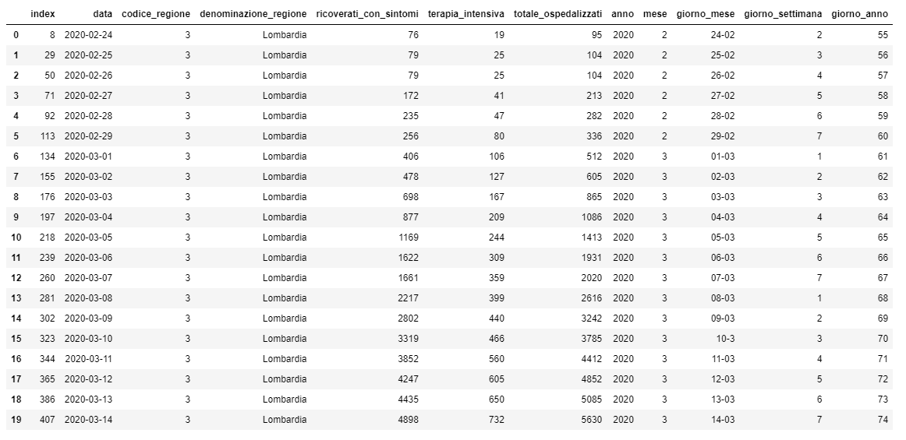
Si fornisce anche una visualizzaione interattiva con qui studiare l'andamento delle varie variabili nel periodo di
osservazione. Si può selezionare le regioni di interesse e i campi su cui visualizzare l'andamento.
Per eaminare il comportamento delle varie regioni sulla base delle variabili, i dati sono stati aggregati sulle varie
colonne, per le regioni, si mostra il dataframe risultante con le regioni ordinate per il valore della media di nuovi
positivi giornalieri.
# Aggregazion valor per le regioni
df_regioni_stats = df_regioni.groupBy("denominazione_regione").agg(avg("ricoverati_con_sintomi").alias("ricoverati_con_sintomi"),
avg("terapia_intensiva").alias("terapia_intensiva"),
avg("totale_ospedalizzati").alias("totale_ospedalizzati"),
avg("isolamento_domiciliare").alias("isolamento_domiciliare"),
avg("totale_positivi").alias("totale_positivi"),
avg("variazione_totale_positivi").alias("variazione_totale_positivi"),
avg("nuovi_positivi").alias("nuovi_positivi"),
max("dimessi_guariti").alias("dimessi_guariti"),
max("deceduti").alias("deceduti"),
max("tamponi").alias("tamponi"),
max("casi_testati").alias("casi_testati"),
avg("ingressi_terapia_intensiva").alias("ingressi_terapia_intensiva"))
c in df_regioni_stats.columns:
if c != "denominazione_regione":
df_regioni_stats = df_regioni_stats.withColumn(c, round(c, 3))
df_regioni_stats = df_regioni_stats.orderBy("nuovi_positivi", ascending=False)
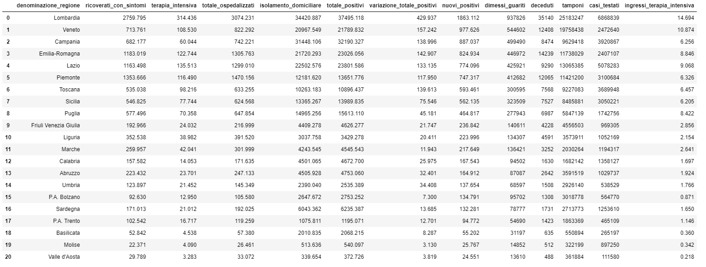
Come nel caso precedente, si fornisce una visuaizzazione interattiva in cui, alla scelta della variabile di interesse e del periodo di osservazione,
le regioni sono ordinate per il valore.
calcolare incrementi giornalieri di morti, dimessi_guariti, totale_casi, tamponi
Indice RT
Analisi dell'indice RT. I dati provengono da https://covid19.infn.it/iss/
L'indice Rt è un valore che indica come varia lo stato di contagiosità in una certa zona (in italia è calcolato su
base sia regionale che provinciale) al variare del tempo. È influenzato dalle diverse misure messe in atto dalle
regioni per il contenimento delle infezioni e consente quindi di monitorare l’efficacia degli interventi nel corso di un'epidemia.
Per maggiori dettagli: https://www.iss.it/coronavirus/-/asset_publisher/1SRKHcCJJQ7E/content/faq-sul-calcolo-del-rt
Le analisi seguenti raccolgono i dati sul tasso di contagio Rt calcolato su tutti i casi positivi e solo sui casi
sintomatici. Rt è calcolato per tutte le regioni italiane e poi ciascuna regione è paragonata alla media nazionale.
Per prima cosa è stato realizzato uno script Python che, in modo automatico, scarica dalla fonte dati i vari csv, uno per ogni regione.
import pandas as pd
reg = ["italia", "abruzzo", "basilicata", "calabria", "campania", "emilia_romagna", "friuli_venezia_giulia", "lazio", "liguria", "lombardia",
"marche", "molise", "piemonte", "puglia", "sardegna", "sicilia", "toscana", "trentino_alto_adige", "umbria", "valle_daosta",
"veneto", "pa_bolzano", "pa_trento"]
for r in reg:
data = pd.read_csv(f"https://covid19.infn.it/iss/csv_part/iss_rt_{r}.csv")
data.to_csv(f"rt_{r}.csv")
print("fatto", r)
Nello script si definisce una lista con i nomi delle regioni che sono puoi usati, all'interno di un ciclo, per scaricare il file csv dal URL.
Il file viene letto come Dataframe Pandas e salvato in locale come csv.
reg = ["abruzzo", "basilicata", "calabria", "campania", "emilia_romagna", "friuli_venezia_giulia", "lazio", "liguria", "lombardia", "marche",
"molise", "piemonte", "puglia", "sardegna", "sicilia", "toscana", "trentino_alto_adige", "umbria", "valle_daosta", "veneto",
"pa_bolzano","pa_trento"]
# Lettura dei datasets delle regioni
res_rt = []
for r in reg:
df_reg = spark.read.csv(f"dbfs:/FileStore/tables/rt/rt_{r}.csv", header="true", inferSchema="true")
df_reg = df_reg.withColumn("regione", lit(r))
res_rt.append(df_reg)
# Creiamo un dataframe unendo tutti gli elementi della lista
df_rt = reduce(DataFrame.unionAll, res_rt )
df_rt = df_rt.drop("_c0")
mostrare media RT per regioni
df_rt_stats = df_rt.groupBy("regione").agg(avg("rt_positivi").alias("avg_rt_positivi"),
avg("rt_sintomatici").alias("avg_rt_sintomatici"),
count("rt_sintomatici").alias("giorni"))
for c in df_rt_stats.columns:
if c != "regione":
df_rt_stats = df_rt_stats.withColumn(c, round(c, 3))
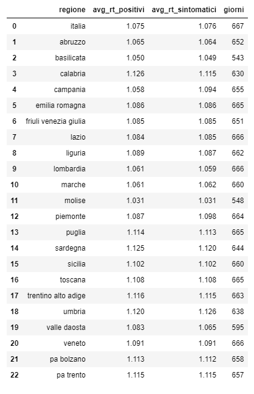
visualizzazione scatter con media RT
visualizzazione andamento RT per regione e con Italia come confronto
Analisi province
Nel dataset mancano le osservazioni di alcune province, il primo passagio ha lo scopo di filtrare le righe che
contengono delle province non specificate. Successivamente si rimuovono le colonne poco utili come stato, note, codice_nuts_1,
codice_nuts_2 e codice_nuts_3.
df_province = df_province.filter(df_province.sigla_provincia.isNotNull())
df_province = df_province.drop("stato", "note", "codice_nuts_1", "codice_nuts_2", "codice_nuts_3")
df_province_group = df_province.groupBy("denominazione_provincia").agg(max("totale_casi").alias("totale_casi"),
count("data").alias("totale_giorni"))
df_province_group = df_province_group.withColumn("media_casi", round(df_province_group.totale_casi/df_province_group.totale_giorni, 3)).orderBy("totale_casi", ascending=False)
Si mostrano le prime 20 province per numero di casi.
Si calcola per ogni provincia, quanto questa abbia pesato nel totale dei casi nella sua regione in percentuale
df_regioni_somma_casi = df_province_group.groupBy("denominazione_regione").agg(sum("totale_casi").alias("totale_casi_reg"))
df_province_group = df_province_group.join(df_regioni_somma_casi, on="denominazione_regione", how="left_outer")
df_province_group = df_province_group.withColumn("%_casi_su_reg", round((df_province_group.totale_casi/df_province_group.totale_casi_reg)*100, 3))
df_province_group = df_province_group.orderBy("%_casi_su_reg", ascending=False)
Si mostrano le prime 20 province che hanno maggiormente pesato sul numero dei casi della loro provincia.
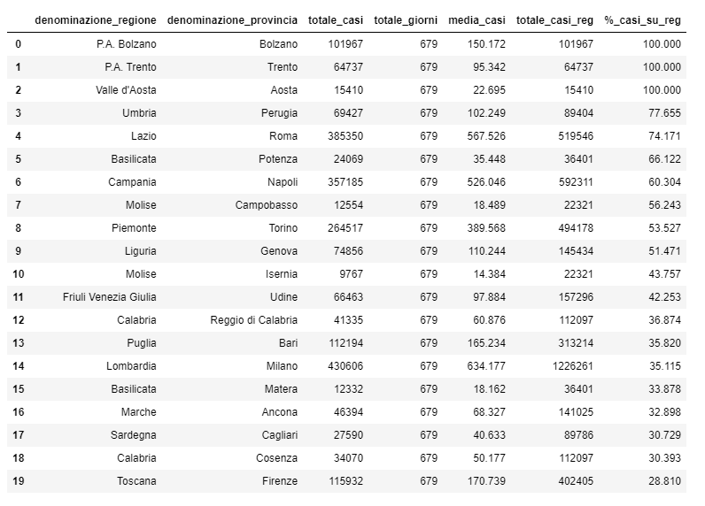
Si mostra questa analisi applicata alla regione Lombardia.
df_province_lombardia = df_province_group.filter(df_province_group.denominazione_regione == "Lombardia")
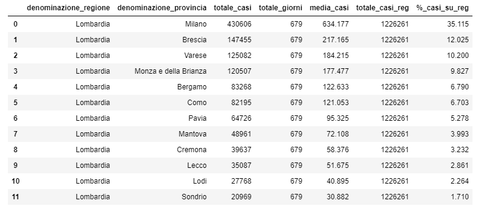
VISUALIZZAZIONI
andamento totale casi delle province raggruppate per regione
visualizzazione andamento per regione,
Analisi vaccini
database vaccini (andamenti, consegne, dosi somministrate, coperture etc – parte alessia)
Di seguito sono riportate le analisi sui dati concernenti le consegne e le somministrazioni dei vaccini per il COVID - 19.
Nel dataset iniziale la platea è divisa per fasce d'età e regioni, per ottere la platea complessiva per ciascuna regione
raggruppiamo i dati tramite la funzione groupBy in base alla colonna "nome_area"
df_platea = df_platea.groupBy("nome_area").agg(sum("totale_popolazione").alias("tot_platea"))
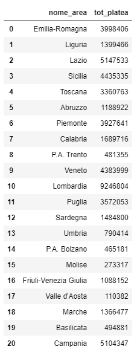
Per mostrare l'andamento delle somministrazioni a livello nazionale dall'inizio della pandemia fino a dicembre 2021,
aggreghiamo i dati tramite la funzione "groupBy" sulla data di somministrazione e calcoliamo la somma sul totale delle
somministrazioni effettuate, ordinandole per data.
df_daily = df_somm_vaccini.groupBy("data_somministrazione").agg(sum("totale").alias("totale_somministrazioni_giornaliere")).orderBy("data_somministrazione", ascending=True)
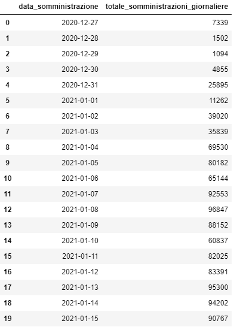
Per mostrare l'andamento delle somministrazioni a livello nazionale dall'inizio della pandemia fino a dicembre 2021,
aggreghiamo i dati tramite la funzione "groupBy" sulla data di somministrazione e calcoliamo la somma sul totale delle
somministrazioni effettuate, ordinandole per data.
df_daily = df_somm_vaccini.groupBy("data_somministrazione").agg(sum("totale").alias("totale_somministrazioni_giornaliere")).orderBy("data_somministrazione", ascending=True)
Per mostrare i dati complessivi a livello nazionale delle somministrazioni usiamo dinuovo la funzione "groupBy" sulla
data di somministrazione e sui fornitori.
Nel database contenente le informazioni riguardanti i fornitori manca l'informazione sul totale delle dosi somministrate.
Per ottenerla sommiamo i dati che ci interessano (prima, seconda e terza dose) e creiamo una nuova colonna "totale_somministrazioni".
df_daily1 = df_somm_fornitori.groupBy("data_somministrazione", "fornitore").agg(sum("prima_dose").alias("totale_prima_dose"),
sum("seconda_dose").alias("totale_seconda_dose"),
sum("pregressa_infezione").alias("totale_pregressa_infezione"),
sum ("dose_addizionale_booster").alias("totale_dose_booster"))\
.withColumn("totale_somministrazioni", col("totale_prima_dose") + col("totale_seconda_dose") + col("totale_pregressa_infezione") + col("totale_dose_booster"))\
.orderBy("data_somministrazione", ascending = True)
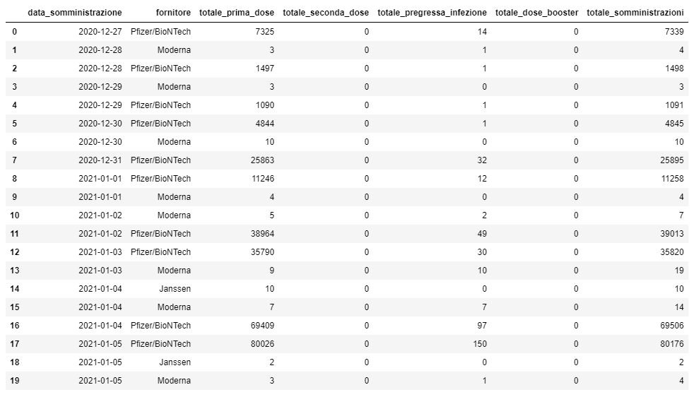
Per un'analisi più accurata della campagna vaccinale, effettuiamo uno studio dei dati a livello regionale.
# Totale delle dosi consegnate per regione
df_consegne_tot = df_consegne.groupBy("nome_area").sum("numero_dosi").orderBy("nome_area", ascendent=True)
df_consegne_tot = df_consegne_tot.withColumnRenamed("sum(numero_dosi)", "sum_dosi_consegnate")
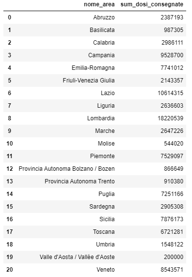
METTERE BAR CHART CON REGIONI
# Guardiamo alle consegne dei vaccini per ciascuna regione, divise però per fornitore
df_consegne = df_consegne.groupBy("codice_regione_ISTAT", "nome_area", "fornitore")\
.sum("numero_dosi")\
.orderBy("codice_regione_ISTAT", ascendent=True)
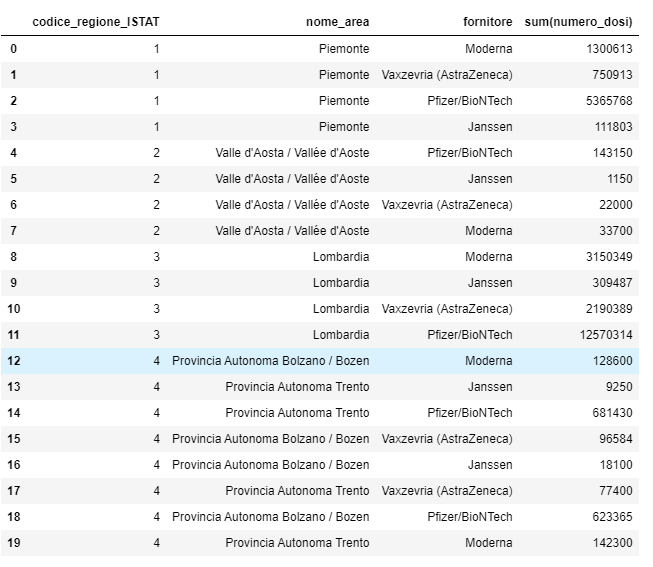
# È possibile poi guardare all'andamento della campagna vaccinale, analizzando l'andamento delle consegne dei vaccini giorno per giorno invece che in aggregato
df_consegne_andamento = df_consegne.groupBy("data_consegna", "nome_area").sum("numero_dosi").orderBy("data_consegna", ascendent=True)
METTERE VIZ CON ANDAMENTO PER REGIONE O IMMAGINE andamento_vaccini_per_data.PNG
Un'ulteriore analisi può essere fatta entrando nel dettaglio della popolazione vaccinata. Di seguito sono state svolte
alcune analisi per ottenere: il numero di coloro che hanno completato il ciclo vaccinale, una descrizione della
copertura vaccinale per fasce d'età e della distribuzione dei punti di somministrazione sul territorio regionale.
# Calcoliamo il numero di persone che hanno completato il ciclo vaccinale sommando le colonne "seconda_dose" e "pregressa_infezione"
# del database contentente i dati sulle somministrazioni
# Prima raggruppiamo i dati sulla chiave "nome_area"
df_completi = df_somm_vaccini.groupBy("nome_area").sum("seconda_dose", "pregressa_infezione").orderBy("nome_area", ascendent=True)
df_completi = df_completi.withColumnRenamed("nome_area", "nome_area2")
# Creiamo una colonna per i dati che vogliamo aggiungere
df_completi = df_completi.withColumn("totale_completi", col("sum(seconda_dose)") + col("sum(pregressa_infezione)"))
# Aggiungiamo i dati sulla platea e su tutta la popolazione
df_completi = df_completi.join(df_platea, (df_completi.nome_area2==df_platea.nome_area))
df_completi = df_completi.join(df_pop_new1, (df_completi.nome_area2==df_pop_new1.denominazione_regione_pop))
# Eliminiamo le colonne superflue
df_completi = df_completi.drop("sum(seconda_dose)", "sum(pregressa_infezione)", "nome_area", "codice_regione", "denominazione_regione_pop", "sigla_regione")
df_completi = df_completi.withColumn("%_platea", round((col("totale_completi")/col("tot_platea"))*100, 3))
df_completi = df_completi.withColumn("%_tot_popolazione", round((col("totale_completi")/col("totale_popolazione"))*100, 3))
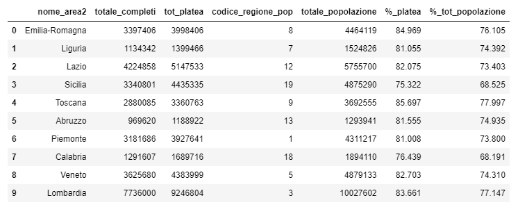
Si calcolano le percentuali di vaccinati sul totale della popolazione, diviso per fasce d'età. Si è scelto di considerare
soltanto gli over 20 per cui si procede al filtraggio dei database popolazione e vaccinati.
# Calcoliamo il numero di persone che hanno completato il ciclo vaccinale sommando le colonne "seconda_dose" e "pregressa_infezione"
# del database contentente i dati sulle somministrazioni
# Prima raggruppiamo i dati sulla chiave "nome_area"
df_completi = df_somm_vaccini.groupBy("nome_area").sum("seconda_dose", "pregressa_infezione").orderBy("nome_area", ascendent=True)
df_completi = df_completi.withColumnRenamed("nome_area", "nome_area2")
df_pop_range_adults = df_pop_range.filter((df_pop_clean.range_eta != "0-15") & (df_pop_clean.range_eta != "16-19"))
df_vaccini_adults = df_vaccini_range.filter(df_vaccini_range.fascia_anagrafica != "12-19")
#Uniamo ora i due dataframe
vaccini_adults = df_vaccini_adults.join(df_pop_range_adults, (df_vaccini_adults.fascia_anagrafica == df_pop_range_adults.range_eta)).orderBy("fascia_anagrafica", ascending=True)
df_pop_range_adults = df_pop_range.filter((df_pop_clean.range_eta != "0-15") & (df_pop_clean.range_eta != "16-19"))
df_vaccini_adults = df_vaccini_range.filter(df_vaccini_range.fascia_anagrafica != "12-19")
#Uniamo ora i due dataframe
vaccini_adults = df_vaccini_adults.join(df_pop_range_adults, (df_vaccini_adults.fascia_anagrafica==df_pop_range_adults.range_eta)).orderBy("fascia_anagrafica", ascending=True)
display(vaccini_adults)
Analisi meteo